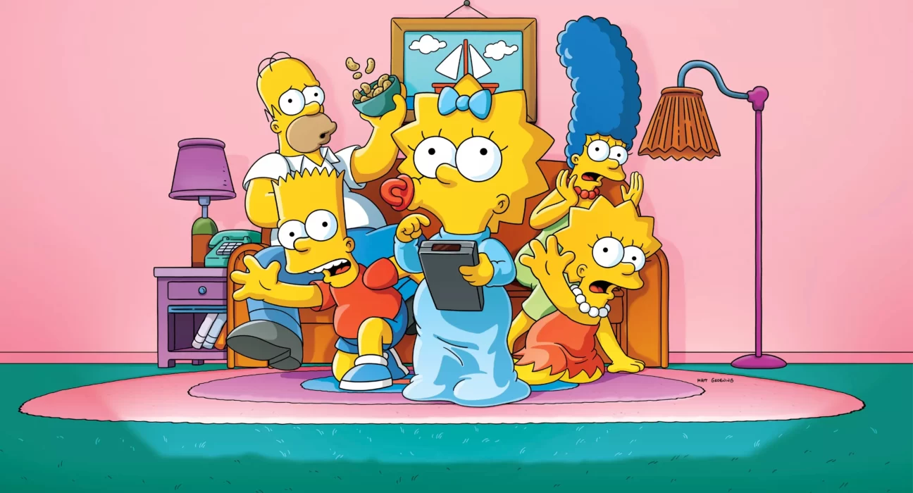
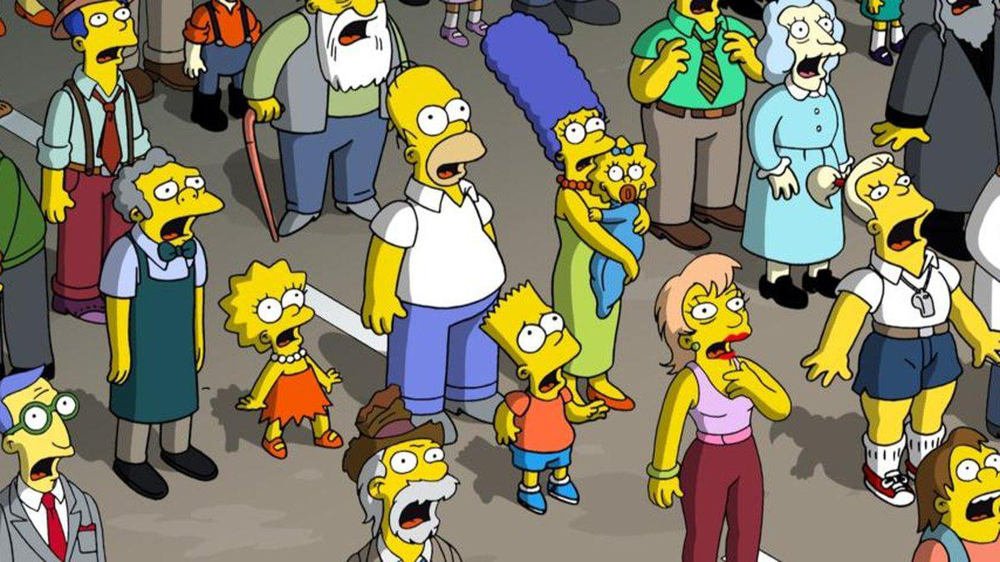
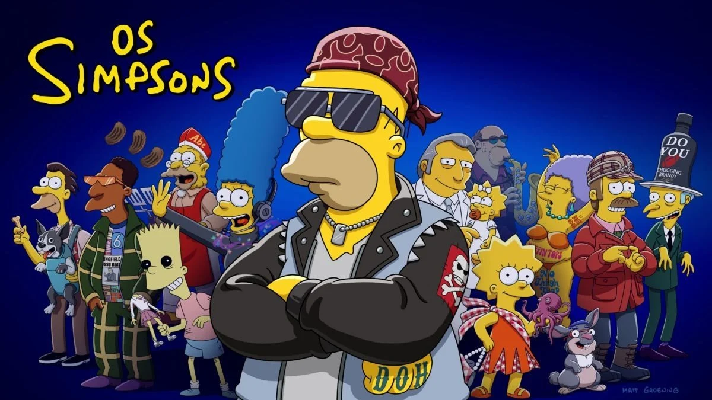
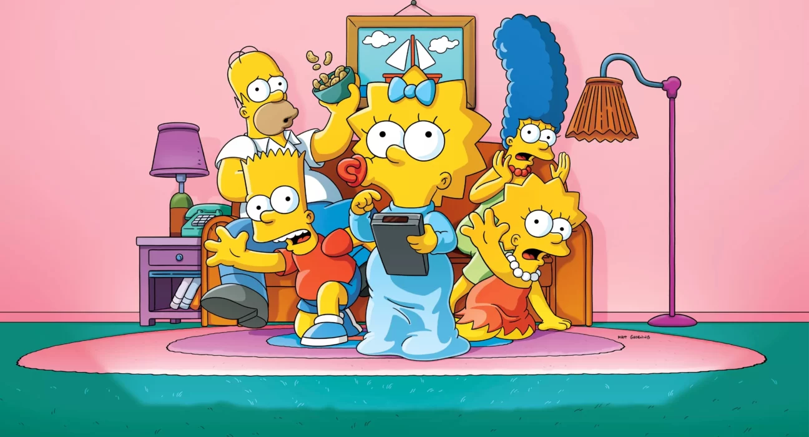
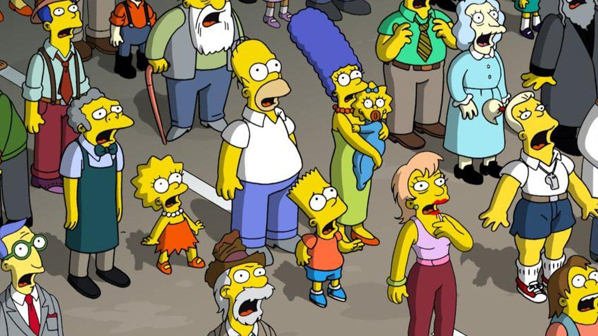
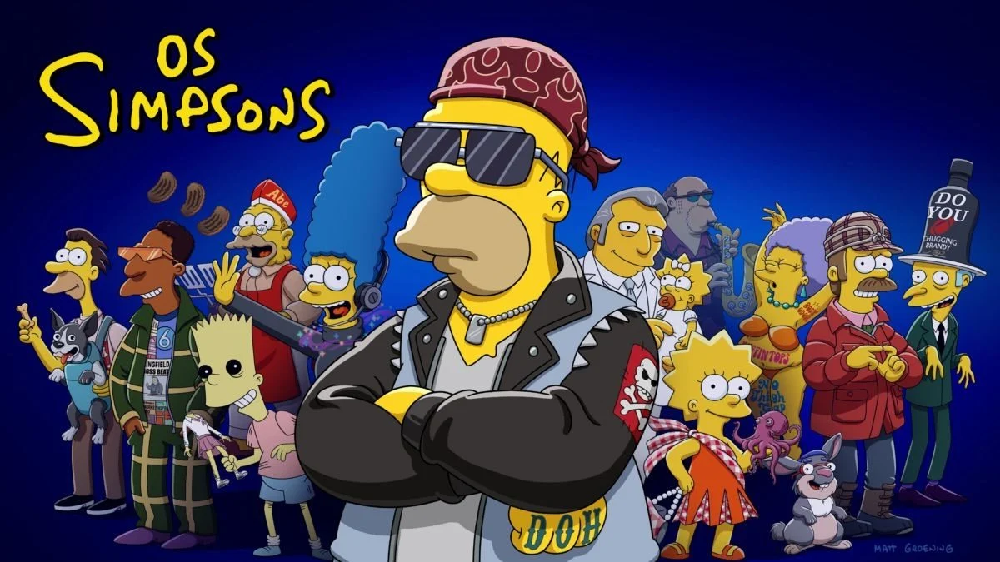

Os Simpsons é uma série de animação e sitcom norte-americana criada por Matt Groening para a Fox Broadcasting Company. A série é uma paródia satírica do estilo de vida da classe média dos Estados Unidos (como cultura, sociedade e televisão) e aspectos da condição humana, através da família protagonista, que consiste de Homer Jay Simpson, Marjorie (Marge) Bouvier Simpson, Bartholomew (Bart) Simpson, Elisabeth (Lisa) Marie Simpson e Margareth (Maggie) Simpson, cuja vida se passa na fictícia cidade de Springfield.
essa é uma página criada com finalidade de prática de atividades de desenvolvimento de Front-end, todos os direitos são reservados aos autores e detentores de direito.


 




